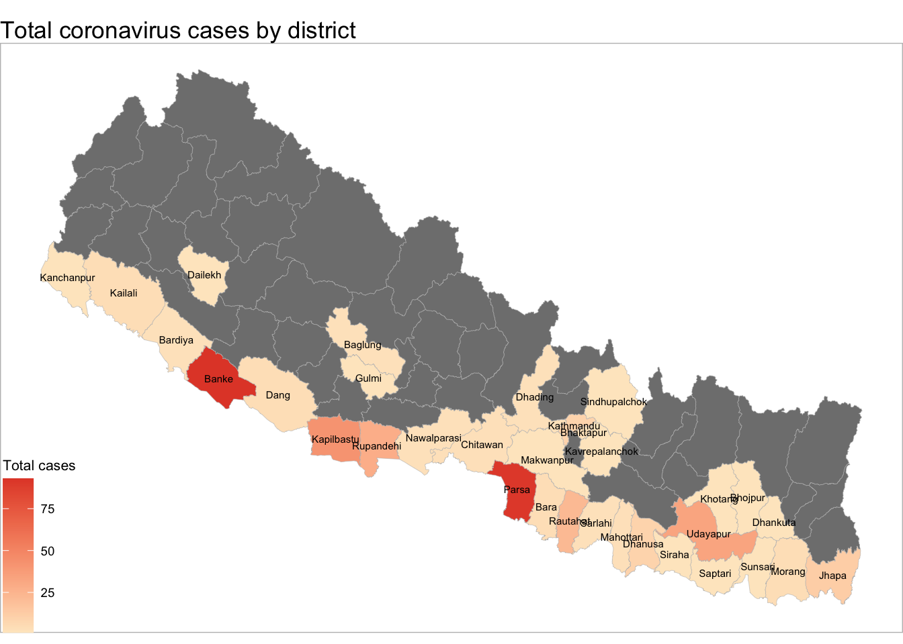
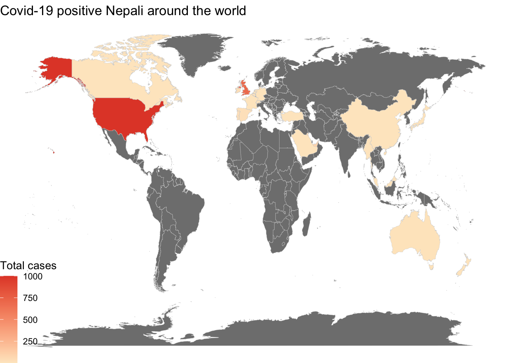
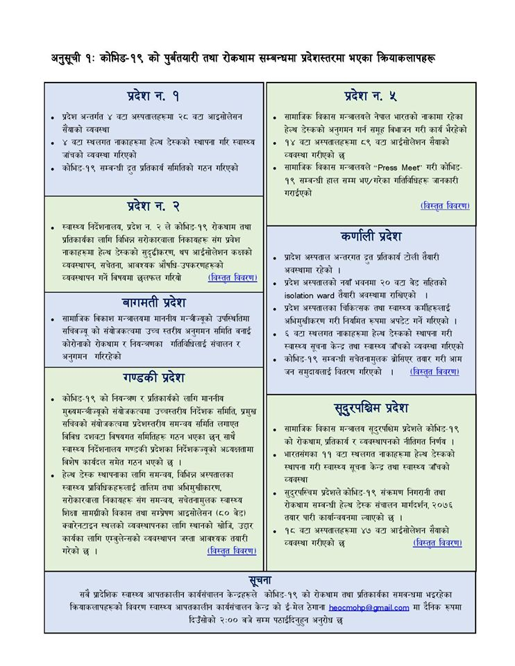

Covid-19 World News
नेपालको जिल्ला स्तरमा कोरोनाभाईरम संक्रमितहरुको संख्या

विश्वमा रहेका कोरोना संक्रमित नेपालीहरु

कोभिड-१९ को पुर्वतयारी तथा रोकथाम सम्बन्धमा प्रदेस स्तरमा भएका क्रियाकलापहरु

Copyright © 2020 blazon dinkum :: #DG-naaniKoMakuro. All rights reserved.
Covid-19 world news